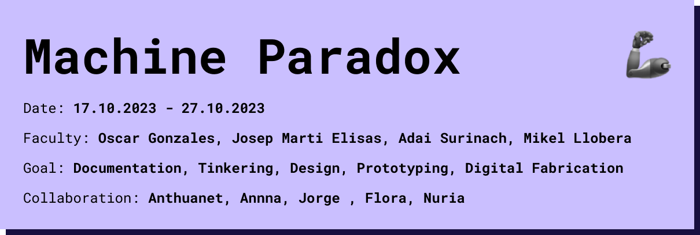

Reflection¶
the two weeks of workshop helped me to better understand what is inside a device and how easy it is to control or repair individual components. when building the fuck duck machine we had to make small changes over and over again to make it work. we had to print and cnc cut different parts to fit the components we took out of the screen.
Fuck Duck Machine¶
Code¶
The arduino controls a motor responding to 3 buttons. an activation button a top stop and bottom stop. `
define motorPin1 8¶
define motorPin2 12¶
define buttonMotor 2¶
define buttonTop 3¶
define buttonBottom 4¶
motor rotation time int buttonPresses = 0; unsigned long motorStartTime = 0; unsigned long lastButtonPressTime = 0; unsigned long totalMotorTime = 0; const int motorRotationTimePerPress = 2000; // 5 seconds bool motorRunning = false;
int MBreleased = 1;
void moveMotor() { totalMotorTime = motorRotationTimePerPress * buttonPresses; digitalWrite(motorPin1, HIGH); digitalWrite(motorPin2, LOW); }
void reverseMotor() { motorStartTime = millis(); digitalWrite(motorPin1, LOW); digitalWrite(motorPin2, HIGH); }
void stopMotor() { digitalWrite(motorPin1, LOW); digitalWrite(motorPin2, LOW); motorRunning = false; buttonPresses = 0; totalMotorTime = 0; }
void setup() { pinMode(buttonMotor, INPUT_PULLUP); pinMode(buttonTop, INPUT_PULLUP); pinMode(buttonBottom, INPUT_PULLUP); pinMode(motorPin1, OUTPUT); pinMode(motorPin2, OUTPUT); digitalWrite(motorPin1, LOW); digitalWrite(motorPin2, LOW); Serial.begin(9600); }
void loop() {
int buttonState = digitalRead(buttonMotor); int buttonTopState = digitalRead(buttonTop); int buttonBottomState = digitalRead(buttonBottom); unsigned long currentTime = millis();
if (buttonState == LOW && MBreleased == 1) { lastButtonPressTime = currentTime; motorRunning = true; motorStartTime = currentTime; buttonPresses++; MBreleased = 0; moveMotor(); } else if (buttonState == HIGH && MBreleased == 0) { MBreleased = 1; Serial.println(“Button Presses: “); Serial.println(buttonPresses); }
required additional time if ((motorRunning) && (currentTime - motorStartTime >= motorRotationTimePerPress*buttonPresses)) { if (buttonPresses > 0) { motorRunning = false; reverseMotor(); buttonPresses = 0; // while (digitalRead(buttonBottom) == HIGH) { // // Keep the motor running until the bottom button is pressed // } //stopMotor(); } }
if (buttonTopState == LOW) { Serial.println(“Button Top Pressed”); reverseMotor(); buttonPresses = 0; }
if (buttonBottomState == LOW) { Serial.println(“Button Bottom Pressed”); if (motorRunning) { stopMotor(); } } } `
Forensic Report: Screen¶
===============
| Identity of the reporting agency | MDEF |
|---|---|
| Case identifier | Forensics of the Obsolescence |
| Identity of the submitter | MDEF Students |
| Date of receipt | 17/10/2023 |
| Date of report | 19/10/2023 |
| Identity and signature of the examiner | Annna, Flora, Marius, Jorge, Núria and Anthuanet |
Examination¶
Descriptive list of items submitted for examination, including serial number, brand and model
Serial number: 011509291189 Brand: SAMSUNG Model: EX2220X Colour: BLACK Made in: CHINA
Forensic Questions¶
What does it do?¶
The Samsung EX2220X LS22CLUSF/XF is a 22-inch LED monitor with a resolution of 1920 x 1080 pixels, which is commonly referred to as Full HD (FHD). The color range of this monitor would typically be 16.7 million colors, which is standard for most Full HD displays.
A computer monitor displays visual information, such as text, images, videos, and graphics, generated by a computer or electronic device. It serves as a user interface, is essential for entertainment, gaming, professional work, and information presentation, and is used in various industries and educational settings.

How does it work?¶
It has 2 kinds inputs; power and data, on teh other side, the screen visuals are the output. There’s a processor that gets information from the PC on which is connected. When it recives the inputs, the processor powers the LCD screen, LCDs work by controlling the orientation of liquid crystal molecules within each pixel to allow or block the passage of light. By using voltage and color filters, they create images and colors on the screen. Backlights provide the illumination.
How is it built?¶
The whole device consists of 2 main parts (external and internal) and different pieces inside them:
1.1. Frame: Made out of PMMA injection mode, it holds the screen to the general structure. 1.2. Backcover: Made out of HIPS injection mode, its acts as a container and protector of all the internal components of the monitor. Th user interacts with it by plugging and unplugging the device. 1.3. LCD Screen: The manufacture of an LCD screen involves steps like preparing glass substrates, adding thin-film transistors and color filters, aligning liquid crystals, sealing the cell, and placing a backlight and finally, the electronic components are integrated.
2.1. Internal container: Made of SPTE (Steel Plate Tinplate Electroplate) by metal cutting and folding in order to give it a structural resistance, it’s function is to contain the rest of the internal parts of the device.
2.2. Power supply board: Made of different layers of FR-4 (fiberglass-reinforced epoxy), by printing the design on a copper-clad board, etching away excess copper, drilling holes, placing and soldering components, testing for functionality, and, if successful, assembling the final product. It’s function is to convert the electricity taken from the plug into the motherboard.
2.3. Motherboard: The materials and manufacturing processes are the same as the Power Supply Board. The motherboard takes the information from the computer and sends it to the LCD screen.


The part 1.3. LCD Screen has it’s different components inside, which are: Backlight: This is not a layer within the LCD panel itself, but it is an essential component. The backlight is responsible for providing the light source that passes through the other layers to create the image. In this case, the technology is LED.
1.3.1. Rear Polarizer: The backlight produces unpolarized light. The rear polarizer is the first layer encountered by the light, and its role is to polarize the light so that it vibrates in a particular direction.
1.3.2. Glass Substrate: Two glass substrates, an upper and a lower one. Liquid crystals are sandwiched between these substrates.
1.3.3. Front Polarizer: Like the rear polarizer, the front polarizer is responsible for polarizing the light. However, it is oriented perpendicular to the rear polarizer. When the liquid crystals change orientation, they can affect the polarization of the light and determine whether it can pass through.
1.3.4. Liquid Crystals: These are the active elements of the LCD panel. Liquid crystals change their orientation in response to an applied electric field. This change in orientation affects the passage of polarized light.
1.3.5. Color Filters: Color filters are used to create the full range of colors. They are located above the front glass substrate and consist of red, green, and blue filters, which are arranged in a pattern to generate different colors.
1.3.6. Thin-Film Transistors (TFTs): Thin-film transistors are used to control the orientation of the liquid crystals. Each pixel typically has its own transistor, allowing for precise control of individual pixels.
1.3.7. Alignment Layers: These layers help ensure that the liquid crystals align properly when no voltage is applied.

Why did it failed, or it wasn’t used anymore?¶
-
The older products were phased out and replaced by newer, technologically advanced alternatives that boasted significantly improved resolution and color quality. These cutting-edge replacements set a new standard in terms of visual fidelity, offering a superior and more vibrant color palette, as well as remarkable image clarity and detail. This transition to the latest products not only met the growing demands of consumers for enhanced visual experiences but also reflected the relentless pursuit of innovation and excellence within the industry.
-
The current plugs are old and only support VGA connections, lacking HDMI compatibility. To address this issue, we need to obtain suitable adapters that can bridge the gap between these older VGA connectors and modern HDMI interfaces. These adapters facilitate the transmission of high-definition multimedia content, ensuring compatibility and integration of older equipment with contemporary display and audiovisual systems. Using these adapters allows for improved visual and audio quality, enhancing the functionality of the existing hardware within today’s technological landscape.

Steps taken¶
- Selection of the machines and cleaning
- Disassembly main parts
- Component mapping
- Testign general system
- Disassembly LCD screen
- LCD screen testing
| Step | Image |
|---|---|
| 1. Selection of the machines and cleaning |  |
| 2. Disassembly main parts |  |
| 3. Component mapping |  |
| 4. Testign general system |  |
| 5. Disassembly LCD screen |  |
| 6. LCD screen testing |   |
Testing¶
Testing tools:¶
| Power Supply | Multimeter |
|---|---|
| Gives a certain amount of voltage to the components in a localized place | Helps us measure the voltage, intensity, connectivity or resistance of the components |
 |
 |
General system testing¶
We started the general testing after disassembeling the whole device. We attempted to connect back every component as it was before, to check what was wrong with it.

We found out that the LCD screen worked and the power supply also but we couldn’t send any image to the monitor.
We concluded that the cable that connects the motherboard to the LCD screen wasn’t working correctly.

LCD screen testing¶
We first disassembeled the different layers and frames leaving us with only the backlight connected to the boards. We tried powering the backlight with the power supply from the board. But the backlight didn’t work even with higher voltage.


While doing the testing we accidentally broke the cables connecting the LCD screen to the power supply. That’s why we decided tear apart the backlight to test the LED strings alone.
Using the cables that we knew that worked and the power supply, we managed to light the strings with a voltage of 27V. The connector has 4 different pins, each one of the lights a string of 10 LEDs, so we were able to control with section we wanted to light.
From this testing we concluded that the cables connecting the LEDs with the power supply board were old and got broken during the process.
Results¶
How many motors did we find inside?¶
The Samsung EX2220X monitor does not typically include any motors.It is primarily a display device with electronic components for video processing and adjustment, but it doesn’t contain motors.
Does it contain a computer or microcontroller?¶
The monitor receives video signals from the connected device and displays them on its screen. While monitors often have some internal electronics for controlling settings like brightness, contrast, and color, they do not have a computer or microcontroller with general computing capabilities like running software or processing data independently. The actual computing tasks are handled by the device to which the monitor is connected.
Did you find any sensors?¶
While it has some basic sensors for power management and display adjustment purposes, it doesn’t contain sensors for things like touch input, ambient light sensing, proximity detection, or accelerometers, which are commonly found in devices like smartphones and tablets.

Conclusions¶
What did you learn?¶
- Components of The Samsung EX2220X LS22CLUSF/XF
- Where the components are produced
- How the components are produced
- How to disasemble artifact correctly
- How to reassemble artifact afer disassembly
- How to test if the components work independtly from each other with a multimeter
- How to identify an issue within an artifact
What surprised you?¶
-
When connecting the screen to power after reassembly: no signal but turns on
-
The diversity of pieces we can connecting between
Questions¶
-
What emerging screen technologies could replace LCD screens in the future?
-
What role do flexible and foldable screens play in the evolution of screen technology and how could they change the industry?
- What are the current trends in screen technologies that could make LCD screens obsolete in the near future?
-
How could projection technology replace LCD screens in display situations, such as in projectors and virtual reality systems?
-
Will it be necessary to have solid screens?
Opinions¶
What did you learn?¶
- How to you use power supply
- How to use multimeter
What surprised you?¶
- Screen showing ‘No signal’ but screen turning on
- We thought we wouldn’t be abe to turn on the two Led strips due to the connectors being physically brokened, we managed tu turn them on with the power supply
Images¶
Screen:


Joystick:¶
:::info
 We also chose the joystick because we found its operation interesting, and we wanted to explore how we can combine these two objects.
:::
We also chose the joystick because we found its operation interesting, and we wanted to explore how we can combine these two objects.
:::


besides the screen, we also disassembled a controller and tried to repair it. the construction was basically very simple and mechanical but in the end it still didn’t work because the slider sensors for the x and y axis were worn and old. we could at least control the button but it was not usable for our machine.